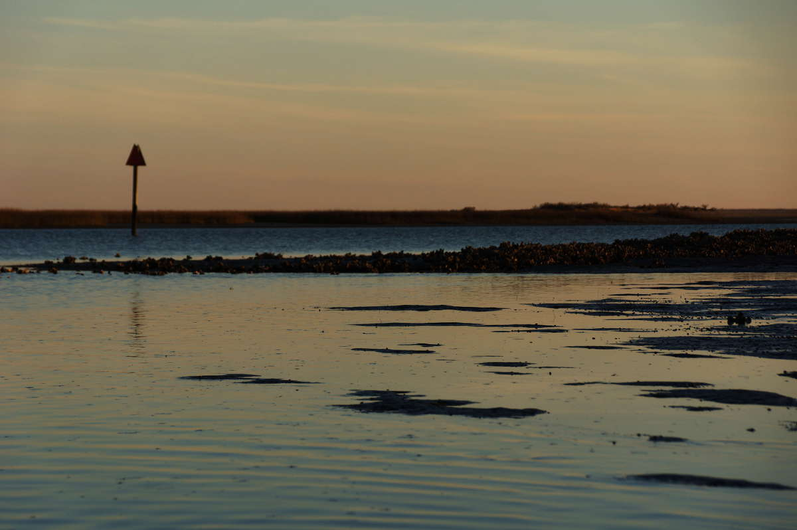
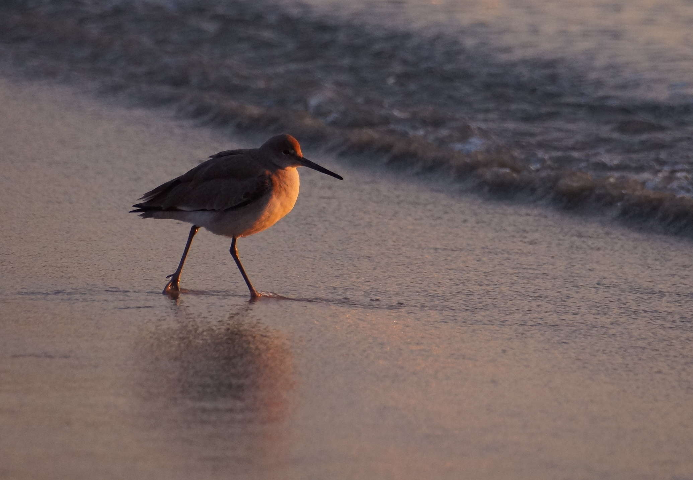
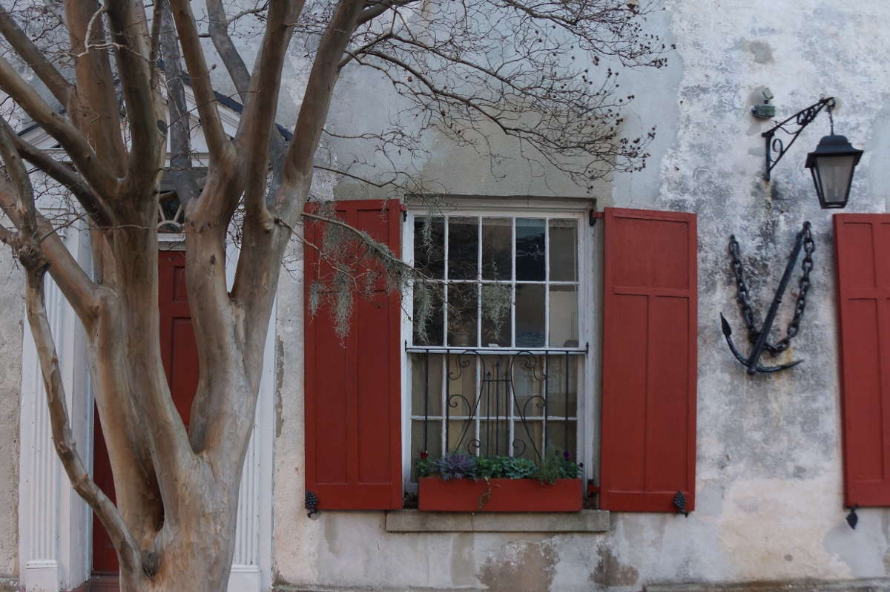
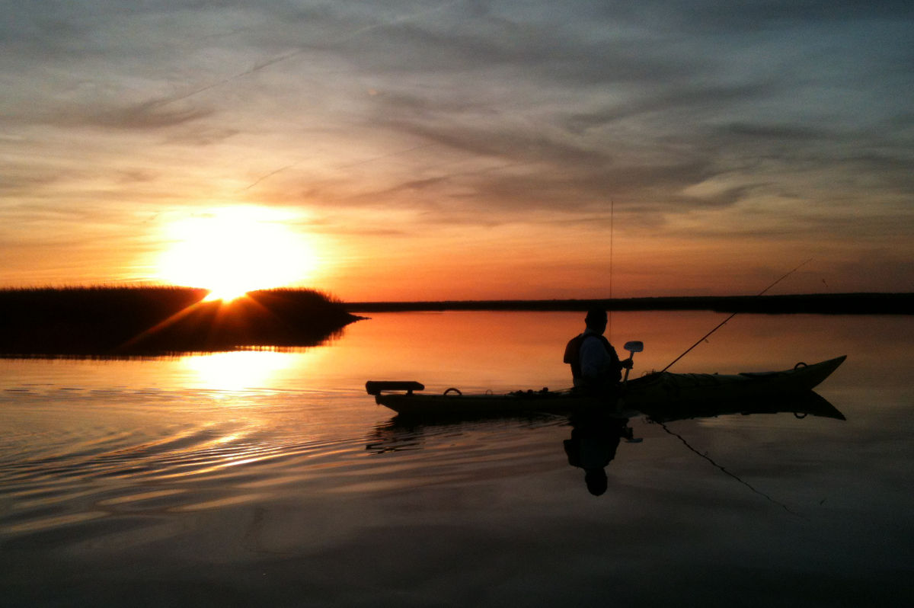

Sean
likes
taking
photos.
Photography — true to the word's root — really is writing with light. A wink of a shutter flashes light through a tiny hole onto film or digital CCD leaving a photograph, a light-stamped imprint of a moment in time. How cool is that? I'm interested in documenting place and experience.
It had been a while since I spent any quality time with my real camera. I took a big trip through the Mojave desert in November 2015. I'll post some new photos here soon. Until then, check out my Instagram profile.
Sean's Instagram »

- 
- 
- 
- 